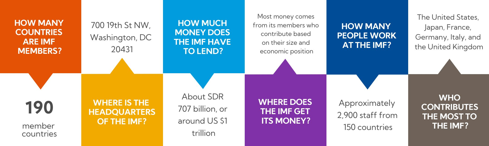

The International Monetary Fund (IMF) works to achieve sustainable growth and prosperity for all of its 190 member countries. It does so by supporting economic policies that promote financial stability and monetary cooperation, which are essential to increase productivity, job creation, and economic well-being. The IMF is governed by and accountable to its member countries.
The IMF has three critical missions: furthering international monetary cooperation, encouraging the expansion of trade and economic growth, and discouraging policies that would harm prosperity. To fulfill these missions, IMF member countries work collaboratively with each other and with other international bodies.
The IMF fosters international financial stability by:


Technical assistance and training to help governments to implement sound economic policies.
Learn moreTo maintain stability and prevent crises in the international monetary system, the IMF keeps a regular policy dialogue with the governments of its member countries. It assesses economic conditions and recommends policies that enable sustainable growth. The IMF also monitors regional and global economic and financial developments.
Providing loans and concessional financial assistance to member countries experiencing actual or potential balance-of-payments problems is a core responsibility of the IMF.
The IMF provides capacity development, which is technical assistance and training of government officials to help member countries strengthen economic institutions and statistics, as well as capacities in areas such as taxation and administration, expenditure management, monetary and exchange rate policies, financial system supervision and regulation, and legislative frameworks.
The pandemic and ensuing economic shocks increased demand from members for financial assistance. In response, the IMF temporarily increased access to funds overall and to emergency financing. It extended zero interest rates on concessional loans and permanently set the interest rate on emergency financing at zero.
Here’s an overview of financial assistance that the IMF provided during the pandemic.
The IMF issues an international reserve asset known as Special Drawing Rights, or SDRs, that can supplement the official reserves of member countries. Total global allocations are currently about SDR 204.2 billion, about $293 billion. IMF members can voluntarily exchange SDRs for currencies among themselves.
IMF funds come from three sources: member quotas, credit arrangements, and bilateral borrowing agreements.
Member quotas are the primary source of IMF funding. A member country’s quota reflects its size and position in the world economy. Read more on the IMF regularly reviews quotas.
New Arrangements to Borrow (NAB) between the IMF and a group of members and institutions are the main backstop for quotas. In January 2020, the IMF Executive Board agreed to double the size of the NAB to SDR 365 billion, or $504 billion.
Member countries also have committed resources through bilateral borrowing agreements (BBAs). In 2020, the IMF Executive Board approved a new round of BBAs, totaling SDR 138 billion, or $190 billion.

The IMF is accountable to its member country governments. At the top of the organizational structure is the Board of Governors, consisting of one governor and one alternate governor from each member country, usually the top officials from the central bank or finance ministry. The Board of Governors meets once a year at the IMF–World Bank Annual Meetings. Twenty-four of the governors serve on the International Monetary and Financial Committee, or IMFC, which advises the IMF's Executive Board.
The day-to-day work of the IMF is overseen by its 24-member Executive Board, which represents the entire membership and is supported by IMF staff. The Managing Director is the head of the IMF staff and Chair of the Executive Board and is assisted by four Deputy Managing Directors.

The IMF was conceived in July 1944 at the United Nations Bretton Woods Conference. The 44 countries in attendance sought to build a framework for international economic cooperation and avoid repeating the competitive currency devaluations that contributed to the Great Depression of the 1930s.


September 2022

October 2022

April 2022

October 2021

Finance & Development
This page was last updated in April 2022